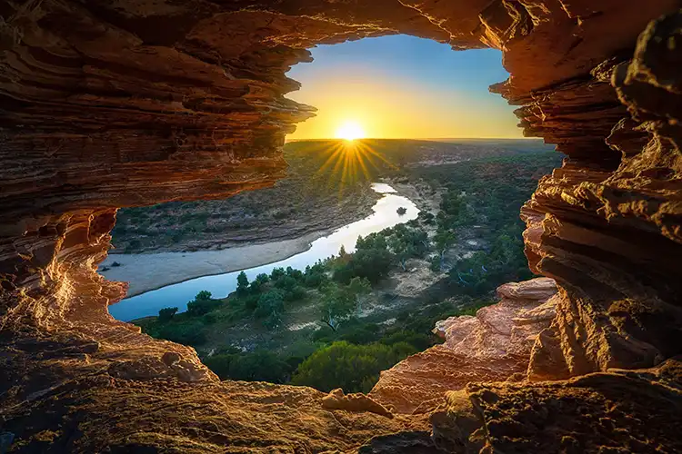
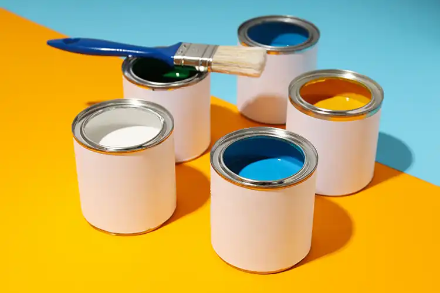
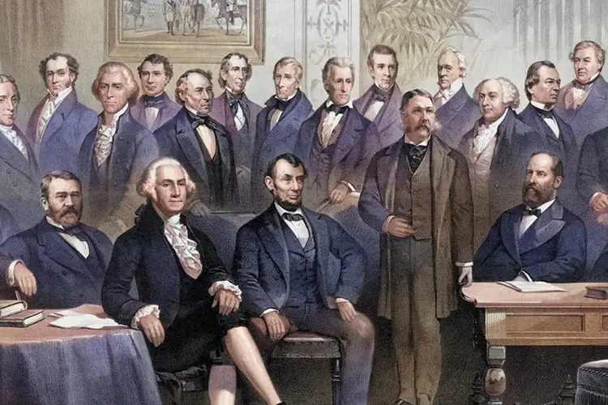

Portal Page
About Me
Paul Cheney is a professor of Web Design and Development at Utah Valley University in Orem, Utah, near Salem. He holds a master's degree in Instructional Technology from Utah State University and a Ph.D. from the University of Virginia. Cheney has worked as a civilian for the U.S. Air Force, at Brigham Young University, and as Director of Media and Instructional Technology at Southern Virginia University. He specializes in responsive design, content management systems, and virtual reality photography, teaching courses for Pluralsight and running Spartan Design University. He has authored multimedia content, developed online courses, and contributed to free sociology textbooks.
Mug Shot

Tag Along
View my invitation-style webpage for a planned group outing. It's an open invite from a friend to join a group activity.
View the AssignmentHire Me
View my webpage to facilitate a connection between designers (or design-students) and those seeking design talent.
View the AssignmentConference Schedule
View my webpage for a full day conference with session times, spearkers, topics and a photo of each presentor.
View the AssignmentAccount
View my webpage with a form that saves account information to local storage then retrieves it when the page is reloaded.
View the AssignmentPark Reviews
View my webpage for US national parks created from a JSON formatted file.
View the AssignmentHome Improvement
View my mobile app to calculate paint and carpet for any room in your house.
View the AssignmentGovernment
View my webpage that show all the presidents of the US with butttons to view by political party.
View the AssignmentFlags

View my webpage that shows flags from the world with buttons to display them as a grid or in a list.
View the AssignmentWeather
View my web app that displays current weather for 4 national parks.
View the AssignmentMovies
Description of this assignemnt with a few details about it.
View the AssignmentXXX
Description of this assignemnt with a few details about it.
View the Assignment